PALEOTONE Manual
Welcome
PALEOTONE turns the M-VAVE FM-1 into a prehistoric synth: four tracks of roaring creatures, war drums, deep horns and jungle pads, plus a living soundscape that runs beside them. It is custom firmware, a fork of GHOULBOX 2.3.2 by Jason Persinger, which is built on Felucca 1.4.1 by Leo Kuroshita (Hügelton Instruments). It is free software under the GPL-3.0 licence.
This manual covers firmware build a371eb4 (23 October 2026). Every screen picture in it is drawn by the firmware's own display code, so what you see here is what the FM-1 shows.
What PALEOTONE adds
- SAURUS, an engine whose every note is a creature's call: 20 creatures from brachiosaur to baby rex.
- ROAR, a drone engine with built-in rhythms (STAMPEDE, WAR PARADE, TRIBAL WAR, HEARTBEAT, CHAOS DRUMS and more).
- 119 sounds of its own across 14 engines, new FM6 patches, 12 ROAR drum rhythms, the TRIBE drum kit and a synthesized ENCOUNTER kit of footfalls, splashes and thunder.
- Scenes that set up all four tracks at power-on: JUNGLE, VOLCANO, STAMPEDE, VALLEY, BLANK and HERD.
- EPOCH, which composes a slow piece from your four tracks.
- SCAPE, a generative soundscape with eight wildlife and weather layers, eight biomes, a drone and creature calls.
- A 1993 park-operations terminal look: phosphor green, amber warnings, scanlines.
How to read this manual
The first sections get you playing: the panel, installing, and a five-minute start. The middle sections explain how a sound is built and how each part of the instrument works. The last sections are reference: every page and knob, the menu, and a troubleshooting checklist.
Button names are written in capitals, as printed on the FM-1 or shown on screen: HOME, PLAY, OCT+. Knobs are KNOB 1 to KNOB 4, left to right under the screen.
The panel and the screen
The FM-1 has 27 keys, eight knobs, sixteen buttons and a 240 × 240 pixel colour screen. Most controls do one job everywhere; the knobs under the screen change meaning with the page you are on.
The controls
| Control | What it does |
|---|---|
| MASTER | Volume. It has a start and an end, like a radio's. |
| SELECT | Tempo (BPM). MENU › BPM LOCK keeps it fixed. |
| ALGORITHM | Picks the track you are working on, T1 to T4, on every page. |
| PRESETS | Changes the selected track's sound. The track's pattern stays. |
| KNOB 1–4 | The four values shown on the page, left to right. On HOME, the engine's four main controls. |
| Keys | Play the selected track, F3 to G5, not velocity-sensitive. On the STEP page they enter notes. |
| PLAY | Starts and stops all four tracks. Lit green while playing. |
| REC | Arms the selected track for live recording. |
| OCT− / OCT+ | Octave down and up. In dialogs and action pages: OCT+ means yes or do it, OCT− means no or back. Both together reset the octave. |
| Page buttons | FX, SCL, ENV, LFO, EDIT, GLO, HOME, SAVE, ARP, SEQ open their group of pages. |
The knobs other than MASTER turn forever in either direction and move a value in clicks.
Three ways to press a page button
- Tap opens the button's first page; each further tap moves to the next page in its group. HOME returns to the home screen, and tapping it there steps through MIXER, CLOCK, KEYS, EPOCH and the SCAPE pages.
- Hold FX, GLO, SCL, EDIT, SEQ or REC for a quick layer: shortcuts on the keys and knobs, with a map on the screen. Let go to close it.
- Double-tap one of those to keep its layer open without holding; tap again to close it.
Two other holds: hold HOME opens the menu, and hold SAVE undoes the last sound or pattern load.
| Hold | The layer |
|---|---|
| FX | Performance effects on the keys. |
| GLO | Lower black keys mute tracks 1–4, white keys F–B solo them while held, C unmutes all, upper F taps the tempo. KNOB 1–4 are the four track levels. |
| SCL | Press a key to make it the ROOT; KNOB 1–4 are ROOT, SCL, CHRD and VOIC. |
| EDIT | Each white key picks an engine for the track. |
| SEQ | SEQ TOOLS: CLEAR, REVERSE, SHIFT ‹, SHIFT ›, RANDOM and COOK on the white keys; KNOB 1–4 are LEN, DIV, SWG and GATE. |
| REC | CLEAR, CLICK, COUNT-IN and CLICK LEVEL on the white keys. |
The screen
At power-on the FM-1 shows the boot screen, then HOME.
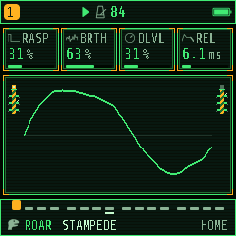
HOME, from top to bottom:
- The header: the selected track's number and colour, a red dot when recording, play state, tempo and the battery.
- Four knob cards, one per KNOB 1–4: a name, a value and a gauge. The card you just turned is drawn in amber.
- The scope, a live picture of the sound between two electric fence posts: smooth for soft sounds, jagged for bright ones.
- The footer: the track's steps as a strip, then its engine and sound (here ROAR STAMPEDE) and the page's name with its place in the group (HOME, or MIXER 1/11).
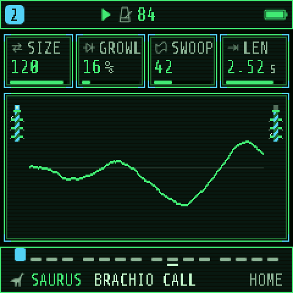
Turn ALGORITHM and everything follows the new track: the header's number, the cards, the footer. Messages such as STOP TO SAVE appear in the header for a moment.
The lights: idle buttons and keys glow dimly. A button that does something right now breathes slowly. PLAY turns green while playing, and keys light with the notes being played. MENU › LEDS sets the idle glow.
Install, update and go back
PALEOTONE installs over USB from a computer with one Python command, and any firmware can be put back the same way. Your projects and sounds survive an update.
Paleotone on the web
The website, https://fantasmoslam.github.io/Paleotone/, plays Paleotone in your browser (the whole firmware, the same code the FM-1 runs; keys on your computer keyboard, the knobs with the mouse). It also has the installer, which installs from Chrome or Edge with no Python, and the editor.
What you need
- A computer with Python 3.12, and the two MIDI packages:
py -3.12 -m pip install mido python-rtmidi(once). - A USB data cable (some cables only charge).
- No music software open: it can hold on to the FM-1's MIDI port.
- The installer
fm1_install.pyand the firmware file, for examplepaleotone-a371eb4.fwsc, in one folder.
Install or update
- Optional but wise: save a backup. The PALEOTONE web editor (
web/editor.htmlin the repository, in Chrome or Edge) has Save backup on its Settings tab: your projects, sounds, samples and settings go to your computer. - Connect the FM-1 and switch it on.
- In a command prompt in that folder:
py -3.12 fm1_install.py paleotone-a371eb4.fwsc - Confirm. The FM-1 switches to update mode, the firmware is written, and it restarts with the boot screen. Do not unplug it until the installer says it is done.
If the installer stops partway, run the same command again: the FM-1 stays in update mode until the install finishes, so nothing is lost. py -3.12 fm1_install.py --info shows what the FM-1 is running.
Rescue mode and going back
Hold OCT− while switching on: the FM-1 starts in USB rescue mode, from which any firmware can be installed. The installer accepts Felucca-family packages and M-VAVE's own official firmware, FM-1.fwsc (V15), which puts the stock synth back.
Your music across versions
Projects and user sounds from Felucca and GHOULBOX load in PALEOTONE. A sound PALEOTONE no longer lists still plays inside an old project; it is only missing from the menus. Going back to a firmware from before SCAPE keeps your projects, but resets your menu preferences once (palette, LEDs and the like), because the settings record grew.
Five-minute start
Press PLAY and the FM-1 plays a scene: four tracks, each with a sound and a looping pattern, in D minor. Everything below works while it plays.
- PLAY starts the four tracks; PLAY again stops them.
- MASTER sets the volume. Headphones in the jack silence the speaker.
- ALGORITHM picks the track (T1–T4). Everything you do applies to that track.
- PRESETS changes the track's sound while it plays. The pattern stays.
- The keys play the selected track; OCT− and OCT+ shift the octave.
- SELECT changes the tempo.
- KNOB 1–4 shape the sound: on HOME they are the engine's four main controls.
Made a mess? Hold SAVE to undo the last sound or pattern load.
The scenes
| Scene | Tempo | Track 1 | Track 2 | Track 3 | Track 4 |
|---|---|---|---|---|---|
| JUNGLE (a new FM-1's) | 72 BPM | LOG MARIMBA, arpeggio | JUNGLE PAD, dirge | JUNGLE NIGHT, a held pedal | TRIBAL KIT, stomp |
| VOLCANO | 60 BPM | VOLCANO, pedal | EPIC CHOIR, dirge | TYRANT ROAR, pedal | WAR DRUMS, stomp |
| STAMPEDE | 104 BPM | ROAR STAMPEDE, ballad | BRONTO HORN, march | TAR PIT BASS, sub | TRIBAL KIT, stomp |
| VALLEY | 66 BPM | BRACHIO CALL, pedal | EPIC STRINGS, dirge | VALLEY HARP, arpeggio | SPIRIT VOX, lament |
| BLANK | 72 BPM | JUNGLE's four sounds, no notes: a clean start | |||
| HERD | 84 BPM | ROAR STAMPEDE, pedal | BRACHIO CALL, pedal | MAMMOTH brass, dirge | DEEP CHANT, chant |
HERD also sets each track's level, so its four parts sit in balance.
Choosing the scene, and RESTORE LAST
Hold HOME for the menu, then SYSTEM › SCENE. The scene is loaded at power-on, but RESTORE LAST (SYSTEM › RESTORE LAST, ON by default) then brings back what you were playing before you switched off. So:
- RESTORE LAST ON: the FM-1 starts where you left off. The scene only plays on a fresh device, or after the last session failed to load.
- RESTORE LAST OFF: every power-on starts with the scene you chose.
To hear a scene you have just picked, set RESTORE LAST to OFF and switch off and on. Set it back to ON afterwards if you want your music remembered.
How the synth is built
PALEOTONE is four tracks playing at once, like four musicians. Each track has its own engine and sound, its own notes in the sequencer and its own settings; together they share 12 voices, the effects and the master.
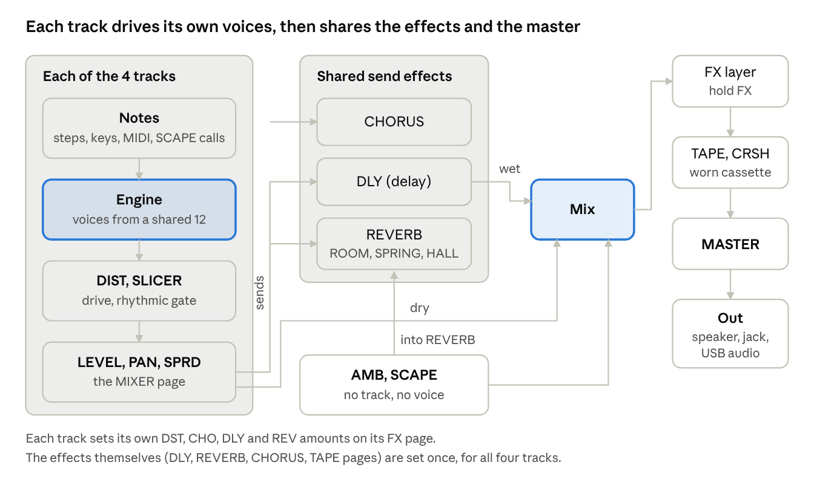
Read it left to right. Notes come from the track's steps, your keys, MIDI or SCAPE's calls; the engine turns them into sound with voices from the shared 12. Then the track's own DIST, SLICER, LEVEL, PAN and SPRD, and sends into the three shared effects. Everything meets in the mix, with the ambience and SCAPE added there, and leaves through TAPE and MASTER.
Tracks and voices
- Four tracks. ALGORITHM picks the one you edit; the header shows its number and colour.
- 12 voices, shared. A voice is one sounding note. A big chord on one track can cut short a long note on another. SAURUS creatures and pads that ring long use voices the longest.
- A track's sound is an engine, a preset and every value you change after. A track's pattern is up to 64 steps. Both are saved together in a project.
The 14 engines
| Engine | How it makes sound | First controls to try (EDIT) |
|---|---|---|
| ANALOG | Two oscillators and noise into a resonant filter, like 1970s and 80s synths. Pads, strings, horns, basses. | WAVE, DTN, CUT, RES |
| FM6 | Six-operator FM: oscillators bending each other's pitch. Bells, brass, glassy tones, deep basses. | SLOT (the patch), FB, MLVL |
| SAURUS | A creature's throat: each note is one call. PALEOTONE's own. | CALL, SIZE, SWOOP, GROWL |
| PHASE | Phase distortion: a smooth wave bent brighter. | WAVE, DCW |
| LOFI | Old game-console chips: pulse, triangle, noise. | CHIP, WAVE, DUTY |
| SAMPLE | Synthesized recordings: jungle night, storm, lithophone, the ENCOUNTER kit. | SET, BITS, CUT |
| VOICE | A sung tone shaped into vowels: chants and choirs. | VOWL, VOWL2, BRTH |
| TRIO | Three oscillators in intervals into a multimode filter. | INT2, INT3, CUT |
| WHEEL | A tonewheel organ with a rotating speaker. | REG, PERC, ROTR |
| GRAIN | Granular clouds from tiny slices of a sound. | POS, SIZE, DENS |
| PHYS | Physical models of strings, bars and drums. | MODEL, BRIT, DAMP |
| ROAR | A drone with a lead note, a buzzing rasp and built-in rhythms. | DRN, RASP, PULS, BRTH |
| NOISE | Noise in colours: wind, rain, lava, swarms. | MODE, COLR, FREQ |
| DRUM | Synthesized drums on eight lanes, including the TRIBE kit. | KIT, TUNE, DECY |
To change a track's engine directly, hold EDIT and press a white key. PRESETS browses every engine's sounds in this order.
Shaping a sound
Every engine makes its raw sound its own way (EDIT shows its eight controls), but the same tools shape all of them: an envelope in time, an LFO for movement, a modulation matrix, voice settings and a scale. These pages belong to the selected track, so each track keeps its own.
Tone: the raw sound and the filter
On ANALOG, TRIO and the other subtractive engines, the oscillator's wave sets the raw tone and a filter carves it:
| Wave | Sounds like |
|---|---|
| SIN | Pure and round, no overtones. A deep hum. |
| TRI | Soft and hollow, like a flute. |
| SQR | Hollow and reedy: a clarinet, a game console. |
| SAW | Bright and buzzy: strings, brass, horns. The usual start for pads. |
- CUT (cutoff): down is darker and further away, up is brighter and closer.
- RES (resonance): a whistling ring at the cutoff.
- DTN (detune): two oscillators slightly apart beat against each other and sound wider.
The other engines have their own brightness control: GROWL and SIZE on SAURUS, RASP on ROAR, MLVL on FM6, BRIT on PHYS. Some control always makes the sound brighter or darker.
Shape in time: ENV
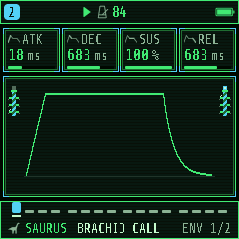
The envelope is how a note changes from the moment it starts until it falls silent. Tap ENV:
| Knob | Stage | Low | High |
|---|---|---|---|
| 1 ATK | How long the note takes to reach full loudness | A hit, a pluck | A slow swell, a horn taking a breath |
| 2 DEC | How long it falls from the peak to the sustain level | A quick drop | A slow settle |
| 3 SUS | The loudness while the note is held (a level) | Fades to silence: a drum, a harp | Holds: an organ, a drone |
| 4 REL | How long it rings after the note ends | Stops dead | Fades slowly into the reverb |
Tap ENV again for ENV DEST: how much the same envelope also moves the filter (FLT), the pitch (PIT) and the engine's shape (SHP). Each can go negative. Envelope on the pitch makes a creature's call swoop down as it ends; on the filter, a note starts bright and darkens.
Movement: LFO and MOD
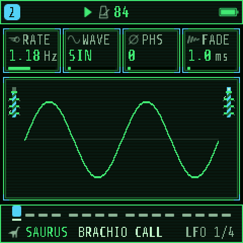
An LFO is an oscillator too slow to hear. It moves a control up and down for you. Tap LFO to step through four pages:
- LFO: RATE (speed), WAVE (SIN, TRI, SAW, SQR, S&H for random steps), PHS (where each note starts in the cycle), FADE (how long before it comes in).
- LFO 2: SYNC (OFF, or locked to the tempo from 4BAR to 1/32), TRIG (NOTE restarts it with each phrase, FREE lets it run), POL (BI moves both ways, UNI only up).
- LFO DEST: how much it moves the pitch (PIT), filter (FLT), shape (SHP) and loudness (AMP).
- MOD: the modulation matrix. KNOB 1 picks one of four slots; KNOB 2–4 set its source, destination and amount.
| LFO on… | Is called | Sounds like |
|---|---|---|
| Pitch, slow and small | Vibrato | A singer holding a note, a lowing beast |
| Loudness | Tremolo | A pulsing pad, a heartbeat |
| Filter | A sweep | The sound breathing open and closed |
MOD's sources are LFO, ENV, VEL, KEY (how high the note is), RAND (a new random value each note), S&H, SLEW and, from a MIDI controller, MODW, AT and EXPR. Its destinations are PITCH, CUT, SHP, AMP, PAN, the four effect sends, the LFO's RATE and DEPTH, VIB, and the engine's eight controls (E1–E8, shown with the engine's own names). RAND to a little CUT or SIZE makes every call come out a bit different, as if from a different animal.
Voices: VOICE
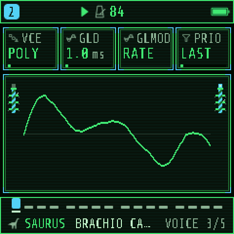
Tap EDIT past the engine's pages for VOICE:
| VCE | What it does | Good for |
|---|---|---|
| POLY | Several notes at once | Pads, chords, herds of calls |
| MONO | One note; a new one cuts the old | Basses, leads, a single beast |
| LEG | One note; overlapping notes slide on without restarting | Horns, voices, singing lines |
| UNI | One note played by several detuned voices | Huge drones and roars |
- GLD (glide): the pitch slides between notes. GLMOD: RATE (big jumps slide longer) or TIME (every slide the same). PRIO: which held key a mono track plays (LAST, LOW, HIGH).
- VOICE 2: ALLOC, DTUNE (how far apart the UNI voices are), PAN and MUTE. VOICE 3: SPRD, which spreads the track's voices across the stereo field.
UNI uses several of the 12 shared voices per note. If notes drop out on other tracks, set a part that plays one note at a time to MONO.
Keys, scales and chords: SCL
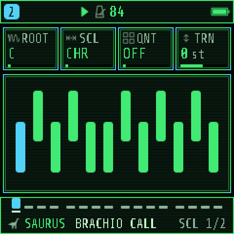
Tap SCL: ROOT (the home note), SCL (the scale), QNT and TRN (transpose, ±24 semitones). The scenes are in D minor.
| QNT | The keys |
|---|---|
| OFF | The plain keyboard. |
| SNAP | Every key plays; a note outside the scale moves to the nearest one inside. |
| WHITE | The white keys play the scale from the root at the C key; the black keys are silent. You can't hit a wrong note. |
| SEQ | SNAP, and the sequencer's notes snap too as they play (the steps keep what was written). |
The 19 scales: CHR, MAJ, MIN, DOR, MIX, PEN, MPEN, HARM, PHRY, LYD, LOC, MEL, BLUES, WHOLE, DIMHW, DIMWH, PHDOM, HUNG, DHARM. For prehistoric moods, MIN and PHRY are dark, MPEN never clashes, PHDOM and DHARM sound ancient and ceremonial, and WHOLE floats, dreamlike.
Tap SCL again for CHORD: CHRD turns each key into a chord. DIA3 and DIA7 play the scale's own triad or seventh on each key, so every key is a right chord; MAJ, MIN, DOM7, MAJ7, MIN7, SUS4 and POW are fixed shapes. VOIC spreads the notes (CLOSE, OPEN, INV1, INV2, +OCT adds a bass an octave down). TEMP chooses the tuning: EQUAL, or the older PYTH, MEAN and JUST, whose pure intervals ring and beat differently.
The arpeggiator: ARP
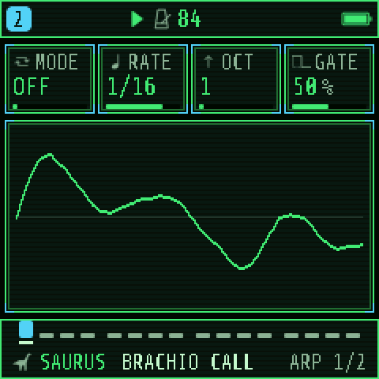
Hold a chord and the arpeggiator plays its notes one at a time, in tempo. Tap ARP: MODE, RATE (1/4 to 4BAR), OCT (1–4 octaves) and GATE (note length). ARP 2 has SWG, PROB (a chance each note plays), HOLD (keeps going after you let go) and ORD (NOTE order or PLAY order).
RATE runs from 1/32 to 4BAR, triplets included. Modes: UP, DN, UPDN, DNUP, RND, ORD, REPEAT, UP+8, CONV, DIVG, PINKY, THUMB, WALK and CHORD.
Try this: a herd that calls by itself. On a SAURUS track, set SCL to D, MIN, WHITE. Tap ARP: MODE RND, RATE 1/4, OCT 2; ARP 2: PROB about half, HOLD ON. Hold three white keys and let go: the creature keeps calling, at random pitches and gaps, always in key.
PALEOTONE's sounds
PRESETS holds 119 sounds, all PALEOTONE's own. Two engines are new to PALEOTONE's family: SAURUS, built for it, and ROAR, GHOULBOX's hurdy-gurdy rebuilt as a beast with a drum inside.
Browsing: PRESETS
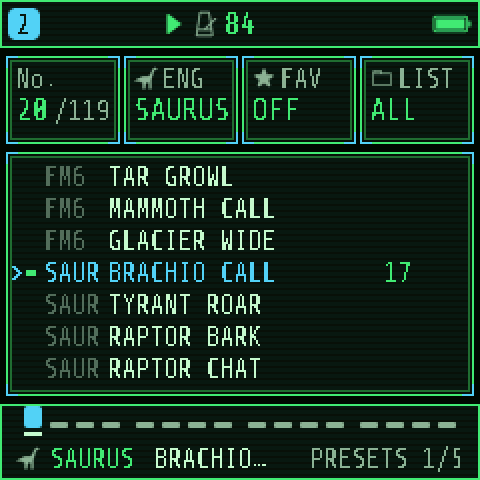
Turn the PRESETS knob anywhere to change the selected track's sound; the pattern stays. Tap SAVE for the browser page:
- KNOB 1 No.: every sound in order, engine by engine.
- KNOB 2 ENG: jump to an engine's first sound.
- KNOB 3 FAV: mark the sound a favourite.
- KNOB 4 LIST: browse ALL, only FAV, or one kind: BASS, LEAD, PAD, PLUCK, KEYS, DRUM, FX, OTHER.
Hold SAVE to undo a load. The sounds, engine by engine:
| Engine | Sounds |
|---|---|
| ANALOG | JUNGLE PAD, EPIC STRINGS, CANYON HORN, STOMP BASS, AMBER LEAD, SWAMP BASS, FERN SWELL, STAR SKY, ICE AGE PAD |
| FM6 | TAR PIT BASS, SLIT DRUM, MAMMOTH, GLACIER PAD, METEOR, CICADA BUZZ, AMBER BELLS, TAR GROWL, MAMMOTH CALL, GLACIER WIDE |
| SAURUS | BRACHIO CALL, TYRANT ROAR, RAPTOR BARK, RAPTOR CHAT, CREST HOOT, PTERO SHRIEK, HERD MOAN, FRILL HISS, SAURO SNORT, DEEP RUMBLE, TITAN APE, NEST CHIRPS, SWAMP CROAK, MONSTER ROAR, DISTANT HERD, LOW GROWL, BABY REX, SEA MONSTER, HADRO HORN, COMPY PACK |
| PHASE | TITAN BRASS, ICE CRYSTAL, RESIN PAD, DEEP PULSE |
| LOFI | FOSSIL LEAD, DINO CHOIR, BONE WHISTLE, PIXEL RAPTOR, EGG ARP, CAVE ECHO |
| SAMPLE | JUNGLE NIGHT, ENCOUNTER, LITHOPHONE, TROPIC STORM |
| VOICE | TRIBE CHANT, EPIC CHOIR, RAPTOR CALL, REX ROAR, DEEP CHANT, SPIRIT VOX, SHAMAN, NIGHT WAIL |
| TRIO | PANGAEA PAD, BRONTO HORN, SKY STRINGS, PTERO CRY, LAVA BRASS, SPORE CLOUD, PRIMAL STAB, AURORA PAD |
| WHEEL | AMBER ORGAN, CANOPY, SWAMP REED, MOSS FLUTE, TEMPLE ORGAN, BONE KEYS, LAGOON |
| GRAIN | NIGHT SWARM, STONE MIST, STORM CLOUD, AMBER DUST |
| PHYS | LOG MARIMBA, GEODE BELLS, VALLEY HARP, TARPIT DRONE, HIDE DRUM, WATER DROPS, BOWED BONE, SITAR VINE, TUSK TINES |
| ROAR | PRIMEVAL, EARTHQUAKE, STAMPEDE, REX GROWL, SWAMP FIDDLE, TRIBE PIPES, WAR CHANT, TUNDRA; the rhythms WAR PARADE, JUNGLE CAMP, RITUAL FIRE, TITAN MARCH, HEARTBEAT, HERD RUN, TRIBAL WAR, TALK DRUMS, ODD RITUAL, FIVE MOONS, SPIRAL, CHAOS DRUMS |
| NOISE | VOLCANO, LAVA CRACKLE, MONSOON, GEYSER, SWARM, WIND RIDGE |
| DRUM | TRIBAL KIT, WAR DRUMS, BONE RATTLE, RITUAL |
Projects made with Felucca or GHOULBOX still play their old sounds; those sounds are just not offered in the browser.
SAURUS: one note, one call
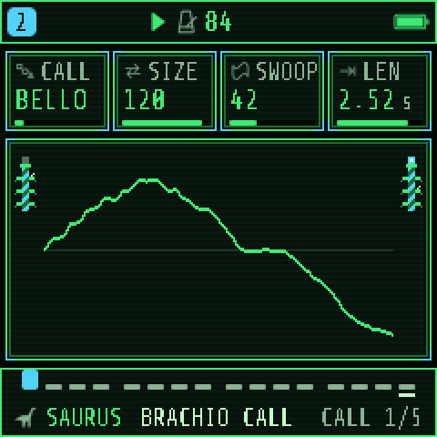
Every note on a SAURUS track is a whole animal call, from a throat that buzzes, rasps and breathes. The key you press sets its pitch; LEN sets how long the call takes, and the envelope still shapes and ends it. HOME's knobs are SIZE, GROWL, SWOOP and LEN.
| Page | Control | What it does |
|---|---|---|
| CALL | CALL | The shape of the call: HOLD (a drone), BELLOW, ROAR, BARK, HOOT, TRILL, CHIRP, MOAN, HISS, SNORT |
| CALL | SIZE | The animal: small and high-throated, up to a sauropod two octaves down |
| CALL | SWOOP | How far the pitch moves during the call, up to two octaves |
| CALL | LEN | How long the call takes, 1 ms to 10 s |
| THROAT | GROWL | Roughness: an undertone, jitter, wider throat and drive |
| THROAT | BRTH | Breath noise |
| THROAT | MOUTH | Closed "oo" to open "ah"; the call opens and closes it |
| THROAT | WILD | How differently each call comes out: length, pitch, roughness |
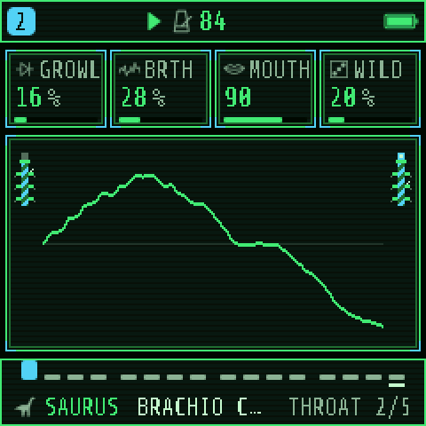
Tips: low notes and a high SIZE make the big animals; short LEN with BARK or CHIRP makes a pack. A track plays up to four calls at once. WILD at a third or more stops a repeated pattern sounding mechanical.
ROAR: a drone with a drum inside
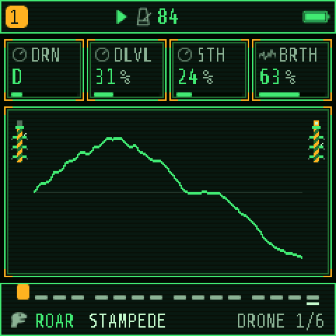
ROAR is monophonic: one lead note over two drones that sound whatever you play. HOME's knobs are RASP, BRTH, DLVL and REL.
| Page | Control | What it does |
|---|---|---|
| DRONE | DRN | The drone's note, C to B, low in the bass |
| DRONE | DLVL | The drone's level |
| DRONE | 5TH | A second drone a fifth above |
| DRONE | BRTH | The pressure on the lead: darker and quieter low, bright and rough high |
| CALL | RASP | The buzzing rasp under the sound, an octave up |
| CALL | PULS | What kicks the rasp, in time (below) |
| CALL | BODY | Two wooden-throat resonances against the raw tone |
| CALL | WOBL | Uneven pitch and loudness; on the rhythms, ghost notes too |
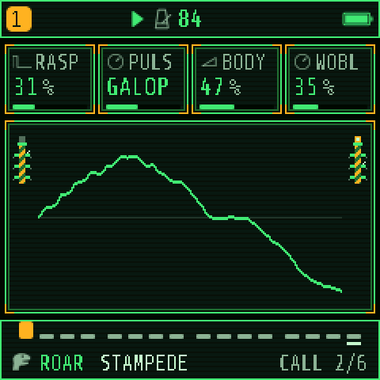
PULS has four kinds of settings:
- HOLD: the rasp sounds all the time.
- 1/4, 1/8, 1/8T, 1/16: the rasp pulses in time with the tempo, from each note.
- TURN: SELECT becomes a crank. Turn it to play; how fast sets the pressure, a sudden spin is a stroke, and stopping silences it even with the key held. KNOB 4 on CALL becomes GEAR (how fast is full pressure).
- DRM4, DRM8, and the rhythms: a deep drum on each stroke, or a full pattern on sixteenths from the note: GALOP (a herd running), TRES (3-3-2), WAR (a march), RAIN, QUAKE (a slow heartbeat), WAR2 (low and high drums answering), TALK (talking drums), SEVEN (7/8), PENTA (five over four), SPIRL (closing into the downbeat), CHAOS (the downbeats, the rest by chance). Every fourth bar ends in a fill.
The 12 rhythm presets (WAR PARADE to CHAOS DRUMS) are ROAR set up this way: hold one note and a drum band plays in tempo, tuned to the key you hold. ROAR tracks also get a RING page: RING ON keeps the drones sounding between notes while the sequencer runs.
FM6, VOICE and the kits
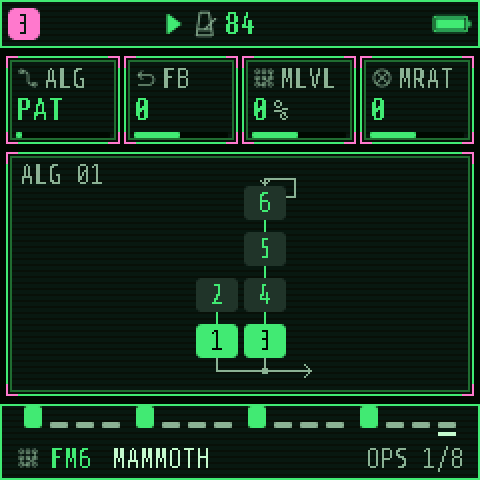
FM6 plays six-operator patches. On its OPS page: ALG (the algorithm, or PAT for the patch's own), FB (feedback), MLVL (all modulators' level: brightness), MRAT (their ratio). On PATCH: MEG, VMOD, DTUN and SLOT, which picks the patch; PALEOTONE's are F9 to F15 (TAR PIT BASS to AMBER BELLS). The OPERATOR and OP ENV pages that follow edit the patch itself, one operator at a time.
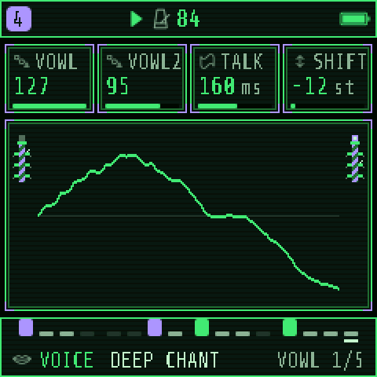
VOICE sings vowels: the chants and choirs. DRUM plays eight lanes; the TRIBE kit (KIT TRIBE) has BOOM, SKIN, CLAP, SEEDS, RATTL, LOG, BONE and ROCK. The keys follow the General MIDI drum map, as on any drum machine: C is BOOM, D is SKIN. LANES and LANES 2 set each lane's level, and on a DRUM track the STEP page becomes a drum grid. The ENCOUNTER kit (SAMPLE) puts one sound on each key from F3: footfalls near and far, a mud stomp, a claw tap, a branch snap, a falling tree, a splash, a rock fall, leaves, bone clacks, a ground ripple, thunder and a huff. All of PALEOTONE's sample material is synthesized; nothing is a recording.
Effects
Effects put the herd somewhere: a canyon, a swamp at night, a valley before a storm. PALEOTONE has one delay, one reverb and one chorus shared by all four tracks, like four players in one hall, plus per-track drive and slicer, a worn-tape master and hands-on performance effects.
Sends: the FX page
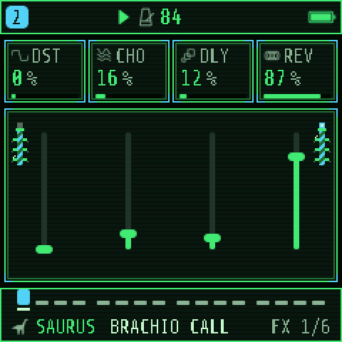
Tap FX. KNOB 1–4 are the selected track's own amounts: DST (drive, on the track itself), and how much it sends into CHO, DLY and REV. A dry, close lead in front of a pad drowned in hall is the classic picture. Tap FX again to step through the rest of the family:
| Page | Knobs | What it is |
|---|---|---|
| FX | DST, CHO, DLY, REV | The track's drive and its three sends |
| SLICER | SLCR, PAT, RATE, DEPTH | The track's rhythmic chopper (below) |
| DLY | TIME, FDBK, COLR, MIX | The shared delay: TIME in note lengths, FDBK repeats (over 100 % it grows), COLR darker repeats |
| REVERB | TYPE, SIZE, DAMP | The shared reverb: ROOM, SPRING or HALL (the default), its size, and DAMP for dark stone or bright glass |
| CHORUS | CRT, CDP | The shared chorus's speed and depth |
| TAPE | TAPE, CRSH, AMB, CRKL | The master: worn cassette, bit crush, ambience and its crackle |
The last four pages are shared: changing them changes every track.
REVERB
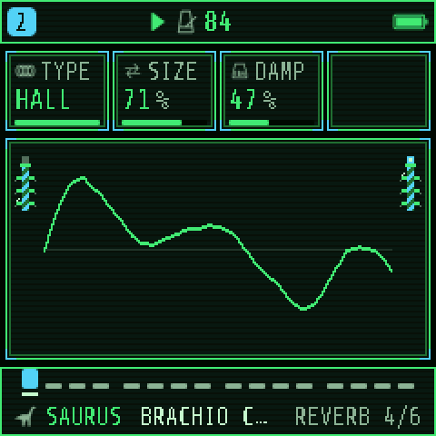
HALL is long, up to about 12 seconds at full SIZE: right for distant calls and slow horns. SPRING is metallic and quick; ROOM is small and close. SAURUS's big creatures and ROAR's drones are set up with lots of REV; turn a track's REV send down to bring it forward.
TAPE, CRSH and the ambience
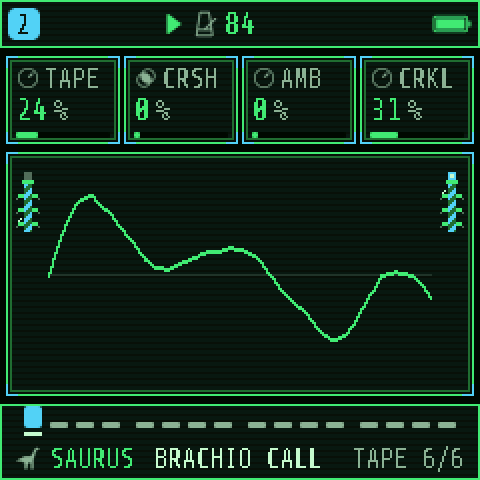
- TAPE: the whole mix through a worn cassette: wavering pitch, warmth, dull treble, hiss.
- CRSH: a cheap old sampler's fewer bits and lower rate: grainy, then robotic.
- AMB: a bed of wind under everything, with no track or voice of its own. CRKL adds crackle to it (0 = the wind alone). For living wildlife, use SCAPE instead.
SLICER
A per-track chopper locked to the tempo, after DST and before the sends, so the echoes follow the chopped sound. SLCR GATE cuts the sound in a 16-step pattern; STUT repeats the last bit instead. PAT picks one of 16 patterns, RATE the step (1/8 to 32T), DEPTH how far a gap closes (or the repeat's level). GATE on a pad gives a herd's trotting pulse.
The FX layer: performance effects
Hold FX (or double-tap it to keep it open) and the keys become effects on the whole mix, held while the key is held:
| White key (from F3) | Effect |
|---|---|
| 1–3 | REPEAT 1/8, 1/16, 1/32: a loop of the last moment, starting on the next 1/16 |
| 4 | REVERSE |
| 5–6 | LPF, HPF: a filter sweeping closed (or open) over a bar |
| 7 | TAPE STOP: the mix slows to a halt |
| 8 | FREEZE: one moment held |
| 9–10 | OCT UP, OCT DN: the mix an octave up or down beside itself |
| 11–12 | FLANGER, PHASER |
| 13–16 | Nothing (yours to assign) |
The first four black keys mute tracks 1–4 while held. KNOB 1–4 are FILTER, CRUSH, THROW (the dry mix into the delay and reverb) and DEPTH; while OCT UP or DN plays, DEPTH is its SHIMMER: with OCT UP each echo climbs another octave. To change a key's effect, hold it in the layer and turn PRESETS; EDIT puts its default back.
Sequencer
Each track has its own loop of up to 64 steps, with chords, ties, accents, slides, chance, ratchets and recorded knob moves. The four loops can have different lengths and drift against each other.
Length, speed and swing
Hold SEQ for SEQ TOOLS: KNOB 1–4 are LEN (1–64 steps), DIV (each step's length, from 4BAR to 1/32), SWG (swing: every second step a little late) and GATE (how long notes sound within their step). The white keys from F3 are CLEAR, REVERSE, SHIFT ‹, SHIFT ›, RANDOM and COOK. LEN 16 at 1/8 is two bars. A 7-step part over an 8-step one never repeats the same way twice in a row.
Load a factory pattern: PHRASES
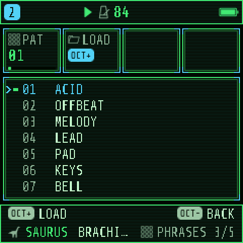
SAVE › PHRASES lists ready-made patterns. Choose one with KNOB 1 and press OCT+ to load it into the selected track; it asks first if the track has notes you wrote. Loading a pattern never changes the sound, and loading a sound never changes the pattern. The ones the scenes use, all in D minor:
| Pattern | What it is | Try it on |
|---|---|---|
| DIRGE | Slow pad chords on the roots | JUNGLE PAD, EPIC CHOIR, MAMMOTH |
| BALLAD | A melody | ROAR STAMPEDE, AMBER LEAD |
| CHANT | Low voices | DEEP CHANT, TRIBE CHANT |
| PEDAL | One D, held | Any SAURUS call, ROAR drones and rhythms, NOISE |
| MARCH | Root, fifth, a chord a bar | BRONTO HORN, STOMP BASS |
| LAMENT | A falling line, A down to D | SPIRIT VOX, BONE WHISTLE |
| ARPEGGIO | Each chord broken upward | VALLEY HARP, LOG MARIMBA |
| ANTIPHON | A call answered an octave down | Two creatures, HADRO HORN |
| STOMP | A procession | TRIBAL KIT, WAR DRUMS |
PEDAL is the easiest way to hear ROAR's rhythm presets and the SAURUS creatures: one long note, and the engine does the rest.
Write notes step by step: STEP
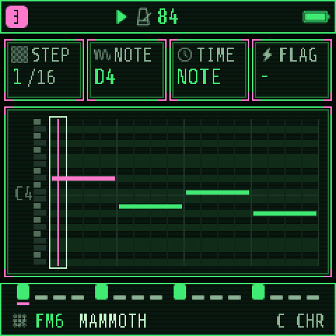
Tap SEQ for STEP. The roll shows the track's notes, the frame is the cursor.
- KNOB 1 STEP (or PRESETS) moves the cursor.
- Press a key to write it into the step; press several together for a chord (up to 4 notes on a POLY track). When you let go, the cursor moves on.
- Tap EDIT to empty the step and move on: a rest.
- KNOB 3 TIME: NOTE, or TIE to hold the previous note through this step.
- KNOB 4 FLAG: ACC plays the step louder, SLD slides into the next note, A+S both.
Record live
Press REC to arm the selected track (from any page), press PLAY and play: notes land in the steps as they pass, and each loop adds more. Press REC again to stop. Knob moves on an armed track are recorded too: the sound changes at those steps every time round. Hold REC for CLEAR, CLICK, COUNT-IN and CLICK LEVEL on the white keys.
Automation, locks, chance and ratchets: AUTOMATION
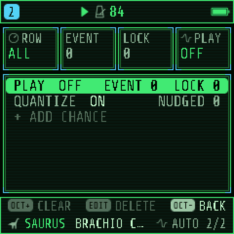
Tap SEQ again for AUTOMATION: the selected track's recorded moves and per-step extras as a list. KNOB 1 picks the row.
- PLAY (the first row): automation ON or OFF (KNOB 4), with how many events and locks there are. OCT+ clears them after asking.
- QUANTIZE: ON plays every step on its start; OFF lets NUDGE move steps early or late.
- A record: an AUTO event holds its value until the next one; a LOCK sounds on its own step only. OCT+ switches between them; EDIT deletes it.
- + ADD (the last row): KNOB 2 picks the step, KNOB 3 what to add: a CHANCE (how often the step plays, from 50 %), a RATCH (the step played 2, 3 or 4 times: a roll), a NUDGE, or a lock on any of the sound's controls. Press OCT+, then KNOB 4 sets its value.
Low CHANCE on a SAURUS track makes calls come and go like real animals; RATCH on a drum makes a stampede roll. All four tracks share 128 records; AUTOMATION FULL means they are used up.
Songs: SONG
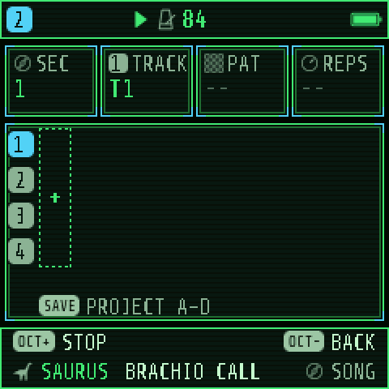
A song chains up to 16 sections into a longer piece. Its patterns are your saved projects: A is the steps of project 1, B of project 2, C of 3, D of 4. Each section says which of them each track plays (or –, silent), and the song plays them with the sounds loaded now.
- Make a section and save it as project 1 (see Saving). Change the notes, save as project 2, and so on.
- Tap GLO for SONG. KNOB 1 SEC picks a section; the last, +, adds one. KNOB 2 TRACK picks a track and KNOB 3 PAT its pattern (A–D or –). KNOB 4 REPS sets how many times the section plays (1–16).
- Press PLAY on SONG to play from the top. Edit sections while stopped.
A ×2, B ×1, A ×2, C ×1 gives a verse, a bridge, the verse again and an ending. SAVE › TOOLS deletes a section or clears the song.
HOME's pages: MIXER, CLOCK, KEYS, EPOCH
Tap HOME on the home screen and it steps through eleven pages that belong to the whole instrument, then back to HOME: MIXER, CLOCK, KEYS, EPOCH, then SCAPE's seven pages (next section). The footer shows where you are, for example MIXER 1/11. Press any other page button to leave.
MIXER
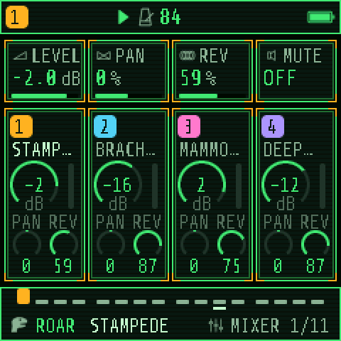
All four tracks at a glance: each card shows the track's sound, its level in dB, its pan and its reverb send. KNOB 1–4 are the selected track's LEVEL, PAN, REV and MUTE; turn ALGORITHM to move to another track. For quick mixing with no page change, hold GLO: KNOB 1–4 are the four tracks' levels.
CLOCK
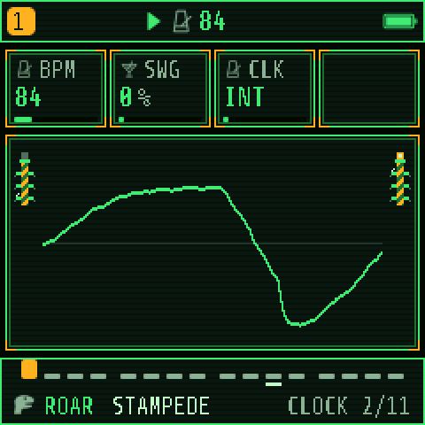
BPM (40–240, the same as SELECT), SWG (swing for the whole song) and CLK: INT (the FM-1's own clock), USB or TRS to follow a computer's or drum machine's tempo and start/stop.
KEYS: two sounds at once
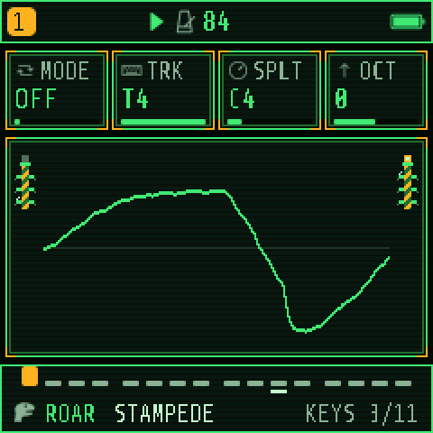
- MODE: OFF; LAYER, every key plays the selected track and a second one together (a horn doubled by a choir); SPLIT, the keys below a point play the second track and the rest the selected one (a drone in the left hand, a call in the right).
- TRK: the second track (T4 to begin with).
- SPLT: the first key of the upper part (C4 to begin with).
- OCT: moves the second track up or down by up to two octaves. A DRUM track keeps its drums where they are.
Each track keeps its own sound and scale, and records what it plays when armed. On the SEQ pages the keys play the selected track only. KEYS is saved with the project.
Hands-free drones (LATCH): hold GLO and press the black key for a track in the upper octave (F♯, G♯, A♯, C♯ above the mute keys, for tracks 1–4). Play a chord on that track and let go: it keeps sounding while you play something else. Press the same GLO key again to end it. Latches are not saved.
EPOCH: a piece composed for you
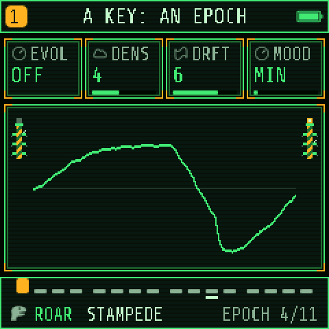
EPOCH composes a slow piece from your four tracks' sounds. Choose the sounds first, set MOOD, then press a key: that key is the piece's key. Each track gets a part that suits its sound: a drone holds the root, a bass walks the chords' roots, a pad holds the chords, a harp breaks them up, a melodic sound sings a phrase and answers it, drums play a slow ritual.
| Knob | Control | What it does |
|---|---|---|
| 1 | EVOL | ON: the piece keeps changing as it plays: a new chord, a new phrase, a part resting or coming back |
| 2 | DENS | How much each part plays, 1 (sparse) to 8 (busy) |
| 3 | DRFT | How often EVOL changes something: 1 rarely, 8 every pass |
| 4 | MOOD | The scale: MIN, DOR, PHRY, HARM, MAJ, MIX. Set it before pressing the key |
EPOCH writes ordinary patterns, 64 steps at 1/8, and sets each track's ROOT and SCL to the key, so you can play along, edit the steps and save the project. It replaces all four tracks' patterns, so the first time it asks (OCT+ yes, OCT− no). A ROAR track's drone is tuned to the key too.
SCAPE: the living soundscape
SCAPE is a world running beside your music: wind, water, rain, insects, frogs, birds, drips and far thunder, a drone in key, and now and then a creature call played by one of your tracks. Nothing repeats; every event is generated as it plays. It has no track and no voices of its own (except the calls), so it costs your music nothing. It is saved with each project.
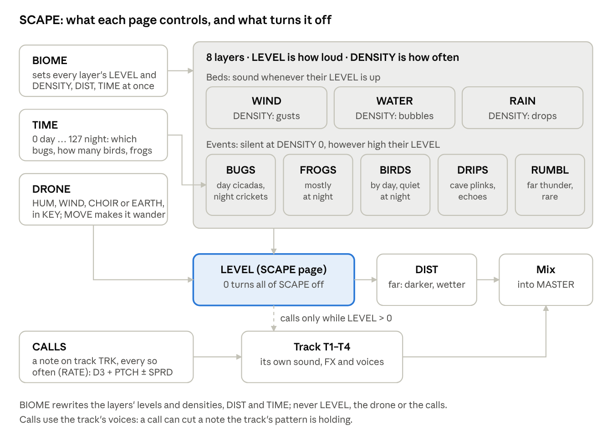
SCAPE lives on seven of HOME's pages, after EPOCH. Tap HOME on the home screen five times for the first one; each further tap is the next page.
Start it in ten seconds
- Tap HOME until the footer says SCAPE 5/11.
- Turn KNOB 1 LEVEL up. 0 is off, and a new project starts at 0.
- Turn KNOB 2 BIOME to a world. It sets all eight layers for you.
- Turn KNOB 4 TIME from day to night and hear the birds give way to crickets and frogs.
SCAPE: LEVEL, BIOME, DIST, TIME
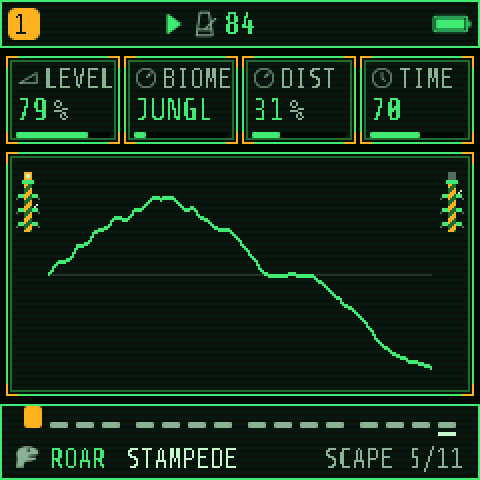
| Knob | Control | What it does |
|---|---|---|
| 1 | LEVEL | The master for everything SCAPE makes, drone and calls included. 0 is off |
| 2 | BIOME | Loads a world's eight levels and densities, DIST and TIME (below). Your LEVEL, drone and calls stay as they are |
| 3 | DIST | Near to far: far is darker and wetter, with more reverb, and the calls play softer |
| 4 | TIME | 0 is midday, 127 midnight. Day: birds and cicadas. Night: crickets and frogs, the birds fall quiet |
| BIOME | On screen | The world |
|---|---|---|
| WATER | WATER | A lake shore: a stream, frogs, birds, light wind |
| JUNGLE | JUNGL | Everything: insects, birds, frogs, rain, water, drips, thunder. The default |
| TUNDRA | TUNDR | Hard wind, a few birds, distant rumbles |
| FOREST | FORST | Birdsong over a brook, a little wind, insects |
| PLAINS | PLAIN | Wind over grass, cicadas, birds, thunder far off |
| MOUNTAINS | MOUNT | Strong wind, a stream, few birds, rumbles, far away |
| CANYONS | CANYN | Wind, cave drips, few birds, very far |
| CALDERA | CALDR | Bubbling water and constant deep rumbles |
SCAPE DRONE: a tone under it all
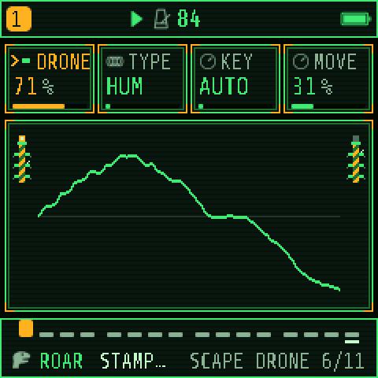
- DRONE: its level; 0 is none (the default).
- TYPE: HUM, a low organ-like hum that beats slowly; WIND, the wind whistling in key; CHOIR, low voices moving between "oo" and "oh"; EARTH, a sub-bass with low noise throbbing in it.
- KEY: AUTO follows track 1's ROOT (the scenes: D), or pick C to B. It sits low, in octave 2.
- MOVE: how far it wanders in brightness, level and a little pitch.
SCAPE CALLS: your tracks join in
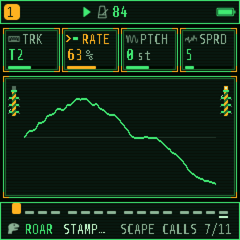
Now and then SCAPE plays a note on one of your tracks, with that track's sound: a SAURUS creature far off in the jungle, a horn across the valley.
- TRK: which track plays the calls, T1–T4, or OFF (the default).
- RATE: how often. At 100 % about every 4 s on average, at 50 % every 8 s, at 10 % every 40 s; the gaps are random.
- PTCH: the note, D3 give or take up to two octaves.
- SPRD: how many semitones each call may stray from that note, each way.
Each call is held 1.5 to 4 seconds, then released; its loudness varies, softer when DIST is far. One call sounds at a time.
SCAPE LEVELS and SCAPE DENSITY
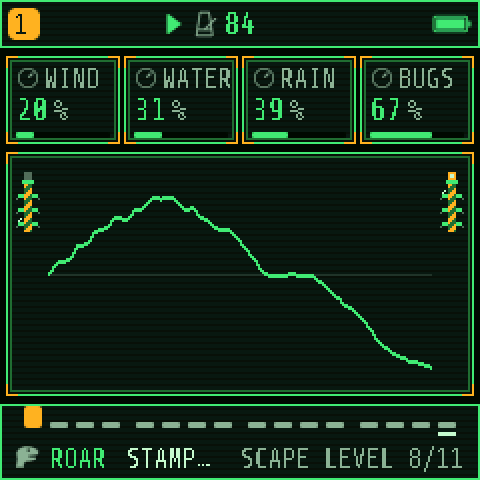
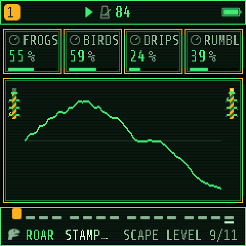
Four pages, the same eight layers on each pair: LEVELS sets how loud each layer is, DENSITY how much happens.
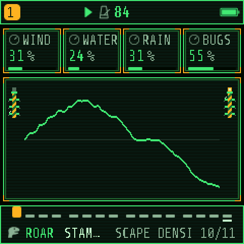
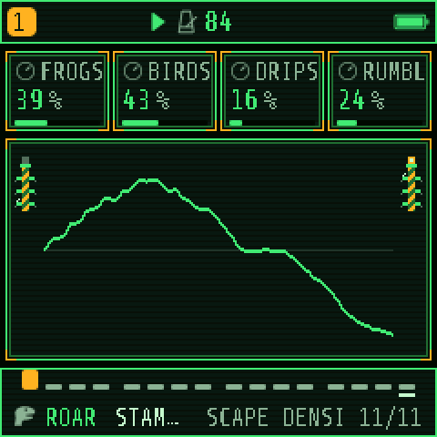
| Layer | Kind | What DENSITY does | At DENSITY 100 % |
|---|---|---|---|
| WIND | Bed | How gusty: 0 is a steady wind | Big, quick gusts |
| WATER | Bed + events | Bubbles over the stream | Several a second |
| RAIN | Bed + events | Drops on the leaves | About 40 a second |
| BUGS | Events | Cicada buzzes (day) or cricket chirps (night) | About one a second |
| FROGS | Events | Croaks in ones, twos and threes | About every 2.5 s |
| BIRDS | Events | Calls of 2–6 chirps | About every 2.5 s |
| DRIPS | Events | Cave drips, sometimes echoing | About every 1.5 s |
| RUMBL | Events | Far thunder swelling and dying | About every 12 s |
Half the DENSITY means twice the wait. Every LEVEL knob is curved: the first half of its turn is quiet (50 % is about a quarter as loud), and the last quarter does the most.
When a layer seems silent
- LEVEL on the SCAPE page is 0. Nothing plays: no layers, no drone, no calls.
- The layer's DENSITY is 0. BUGS, FROGS, BIRDS, DRIPS and RUMBL make nothing at DENSITY 0, whatever their LEVEL. Some biomes set several to 0 (TUNDRA has no bugs or frogs at all).
- It is the wrong time of day. BIRDS fade out towards night (TIME 127); FROGS are faint by day (TIME 0).
- The layer's LEVEL is under about 40 %. Because of the curve it is very quiet there, especially under a loud song.
- It is just waiting. At low DENSITY, events are seconds or a minute apart. RUMBL is rare even at 100 %.
- No calls? TRK must be a track, RATE above 0 and LEVEL above 0. The track must have a sound that plays a held note: a drum track or a sound with a very short envelope gives only a tick.
- Turned BIOME by mistake? It replaced your levels and densities. Hold SAVE does not undo it; set them again, or load the project.
Try this: a night on the plains. SCAPE LEVEL 80 %, BIOME PLAINS, TIME 110. SCAPE CALLS: TRK on a SAURUS track with DISTANT HERD, RATE 30 %, PTCH −12, SPRD 7. DIST 70 %. Then stop the sequencer: the world keeps going.
Saving
The FM-1 keeps two kinds of things: projects (everything you hear: four tracks with their sounds and patterns, the song, tempo, effects, KEYS, EPOCH and SCAPE) and user sounds (one track's sound). Saving works only while stopped; the header says STOP TO SAVE otherwise.
Projects: four slots, A to D
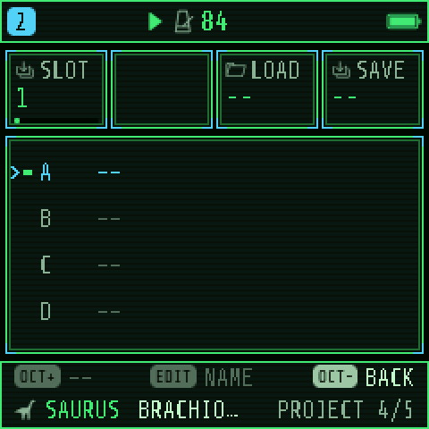
- Stop. Tap SAVE until PROJECT shows.
- KNOB 1 SLOT picks the slot. Turn KNOB 4 SAVE to GO and press OCT+. If the slot holds a project, it asks first: OCT+ again.
- Name it with the keys and press OCT+.
To load: the same page, KNOB 3 LOAD to GO, then OCT+. EDIT renames the selected slot. Slots A–D are also the patterns A–D of a song.
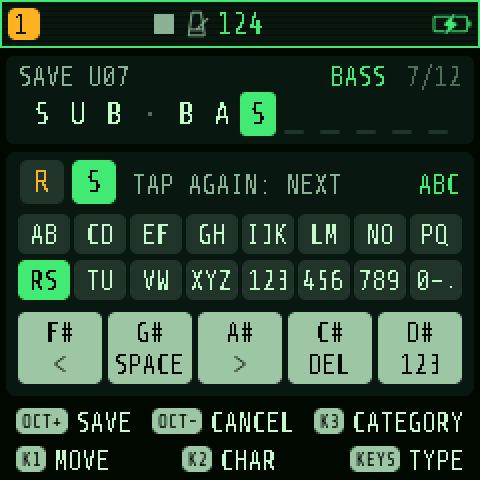
User sounds: 32 slots
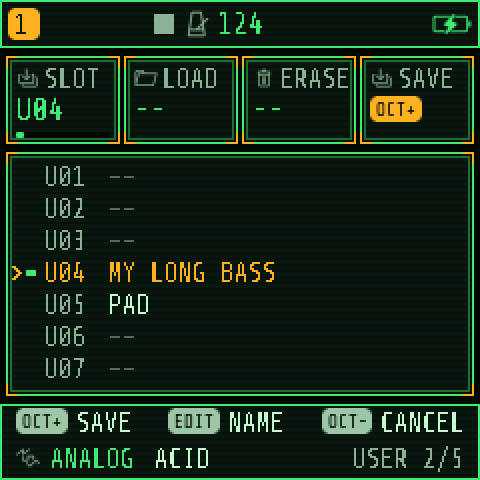
Stop and tap SAVE past PRESETS to USER. Pick a slot with KNOB 1, press OCT+, name it and press OCT+ again. Your sounds come after the factory sounds when you turn PRESETS.
Autosave and RESTORE LAST
Once the FM-1 has been stopped for about 10 seconds with something changed, it quietly saves the session (at most once a minute). At the next power-on, RESTORE LAST (MENU › SYSTEM, ON by default) brings that session back, SCAPE settings included. With RESTORE LAST OFF nothing is autosaved, and every power-on starts with the scene from MENU › SYSTEM › SCENE. Your four project slots are never touched by autosave.
Undo
Hold SAVE to go back before the last sound load, pattern load, clear or AUTOMATION edit; hold again to redo. A turn of BIOME or EPOCH's composing is not undone this way: save a project first if you want to come back.
Backups
The PALEOTONE web editor (in Chrome or Edge) saves everything on the FM-1 to your computer, and puts it back: projects, user sounds, samples and settings. Do it before updating and before any experiment you might regret.
The menu, MIDI and USB
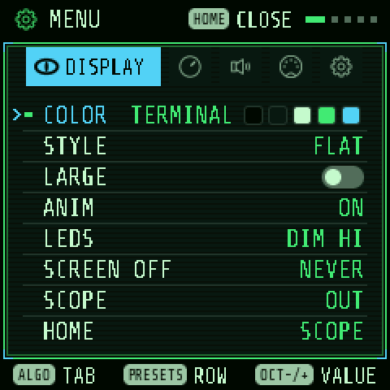
Hold HOME for the menu. ALGORITHM moves between its five tabs, PRESETS through the rows, and OCT− / OCT+ or any knob changes a value. HOME closes it. Menu settings belong to the FM-1, not to a project, except TUNE and MIDI IN.
| Tab | Rows |
|---|---|
| DISPLAY | COLOR (TERMINAL is PALEOTONE's; JUNGLE, VOLCANO, CRYPT and more) · STYLE (FLAT or LINE) · LARGE (bigger knob cards) · ANIM · LEDS (the idle glow) · SCREEN OFF · SCOPE (OUT after MASTER, MIX before it) · HOME (SCOPE, or TRACKS: all four tracks at a glance) |
| CONTROL | HOLD (how long a hold takes) · KNOB ACCEL · FX LATCH · BPM LOCK (SELECT stops changing the tempo) · SCALE LEDS · STEP PREVIEW · CHORD ENTRY · NOTE NAMES (the note or chord you play, named at the top) |
| AUDIO | SPEAKER EQ (FLAT, LOWCUT, BASS+; keep FLAT when recording) · USB LEVEL (MASTER or FIXED) · CLICK · CLICK LEVEL · COUNT-IN · TUNE (±50 cents, saved with the project) |
| MIDI | MIDI IN (which channels play which track; saved with the project) · T1 OUT to T4 OUT · CLOCK OUT |
| SYSTEM | SCENE · USB SERIAL · RESTORE LAST · CALIBRATION · INFO (firmware, USB, CPU load) · ABOUT |
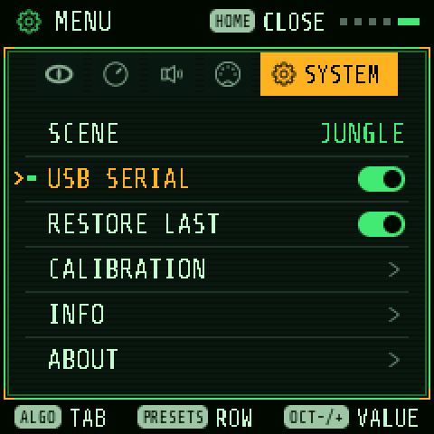
Keep USB SERIAL OFF unless you need Felucca's developer console; on some Macs it hides the USB audio input.
MIDI in
Over USB from a computer, or into the TRS MIDI IN socket with an adapter. With MIDI IN on CH1-4, channels 1–4 play tracks 1–4 (CH5-8, CH9-12 and CH13-16 do the same with those channels); with SEL, every channel plays the selected track. Pitch bend and the sustain pedal work. These control changes move the FM-1's controls (track ones on the channel's track):
| CC | Control |
|---|---|
| 7 · 10 | Level · pan |
| 73 · 75 · 79 · 72 | Attack · decay · sustain · release |
| 92 · 93 · 94 · 91 | Drive · chorus · delay · reverb sends |
| 76 · 77 · 78 | LFO rate · LFO to pitch · LFO fade |
| 110 · 111 | LFO to filter · LFO to loudness |
| 21–24 | HOME's four knobs for the track's engine |
| 5 · 71 | Glide · the engine's resonance, where it has one |
| 85 · 86 | CRSH · TAPE |
| 102 · 103 | REVERB SIZE · DAMP |
| 104–107 | DLY TIME · FDBK · COLR · MIX |
| 108 · 109 | CHORUS rate · depth |
| 74 | The FX layer's filter on the whole mix: below 64 low-pass, above high-pass |
On an armed track these moves are recorded as automation. The mod wheel, aftertouch and expression pedal are MOD sources.
MIDI out (PALEOTONE)
MENU › MIDI › T1 OUT to T4 OUT send each track's notes, from the keys and from the sequencer (steps, chords, ratchets; DRUM lanes as General MIDI drum notes), to a computer over USB. Each is AUTO (the track's MIDI IN channel), a channel 1–16, or OFF. CLOCK OUT ON sends 24 pulses a beat with START and STOP, while CLK is INT. MIDI out is USB only: the TRS jack is an input.
Following another clock
HOME › CLOCK › CLK set to USB or TRS makes the FM-1 follow a computer's or drum machine's tempo and start/stop.
Recording to a computer
The FM-1 is a USB audio input on a computer, no driver needed: the master in stereo at 44.1 kHz. MENU › AUDIO › USB LEVEL FIXED records at full level whatever MASTER says. Keep SPEAKER EQ on FLAT.
Reference: every page and knob
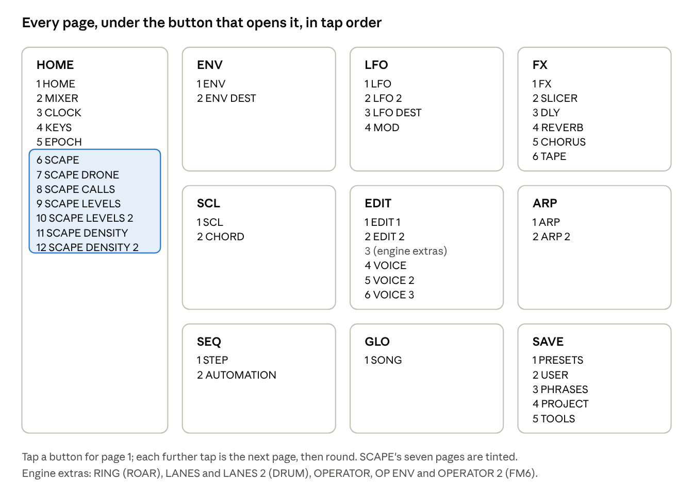
Track pages change the selected track only; shared pages change the whole instrument and are saved with the project. EDIT 1 and 2 are the engine's own (see the engines table and PALEOTONE's sounds).
| Page | Button | For | KNOB 1 | KNOB 2 | KNOB 3 | KNOB 4 |
|---|---|---|---|---|---|---|
| HOME | HOME | track | the engine's four main controls | |||
| MIXER | HOME | track | LEVEL | PAN | REV | MUTE |
| CLOCK | HOME | shared | BPM | SWG | CLK | |
| KEYS | HOME | shared | MODE | TRK | SPLT | OCT |
| EPOCH | HOME | shared | EVOL | DENS | DRFT | MOOD |
| SCAPE | HOME | shared | LEVEL | BIOME | DIST | TIME |
| SCAPE DRONE | HOME | shared | DRONE | TYPE | KEY | MOVE |
| SCAPE CALLS | HOME | shared | TRK | RATE | PTCH | SPRD |
| SCAPE LEVELS | HOME | shared | WIND | WATER | RAIN | BUGS |
| SCAPE LEVELS 2 | HOME | shared | FROGS | BIRDS | DRIPS | RUMBL |
| SCAPE DENSITY | HOME | shared | WIND | WATER | RAIN | BUGS |
| SCAPE DENSITY 2 | HOME | shared | FROGS | BIRDS | DRIPS | RUMBL |
| ENV | ENV | track | ATK | DEC | SUS | REL |
| ENV DEST | ENV | track | FLT | PIT | SHP | |
| LFO | LFO | track | RATE | WAVE | PHS | FADE |
| LFO 2 | LFO | track | SYNC | TRIG | POL | |
| LFO DEST | LFO | track | PIT | FLT | SHP | AMP |
| MOD | LFO | track | slot 1–4 | SRC | DST | AMT |
| FX | FX | track | DST | CHO | DLY | REV |
| SLICER | FX | track | SLCR | PAT | RATE | DEPTH |
| DLY | FX | shared | TIME | FDBK | COLR | MIX |
| REVERB | FX | shared | TYPE | SIZE | DAMP | |
| CHORUS | FX | shared | CRT | CDP | ||
| TAPE | FX | shared | TAPE | CRSH | AMB | CRKL |
| SCL | SCL | track | ROOT | SCL | QNT | TRN |
| CHORD | SCL | track | CHRD | VOIC | TEMP | |
| EDIT 1, EDIT 2 | EDIT | track | the engine's eight controls | |||
| RING | EDIT | track (ROAR) | RING | |||
| LANES, LANES 2 | EDIT | track (DRUM) | lane levels 1–4, 5–8 | |||
| VOICE | EDIT | track | VCE | GLD | GLMOD | PRIO |
| VOICE 2 | EDIT | track | ALLOC | DTUNE | PAN | MUTE |
| VOICE 3 | EDIT | track | SPRD | |||
| ARP | ARP | track | MODE | RATE | OCT | GATE |
| ARP 2 | ARP | track | SWG | PROB | HOLD | ORD |
| STEP | SEQ | track | STEP | NOTE | TIME | FLAG |
| AUTOMATION | SEQ | track | ROW | step | parameter | value |
| SONG | GLO | shared | SEC | TRACK | PAT | REPS |
| PRESETS | SAVE | track | No. | ENG | FAV | LIST |
| USER | SAVE | track | SLOT | |||
| PHRASES | SAVE | track | PAT | |||
| PROJECT | SAVE | shared | SLOT | LOAD | SAVE | |
| TOOLS | SAVE | both | PAT (clear the track's steps) | SOUND (init the sound) | SEC (delete a song section) | SONG (clear the song) |
| SEQ TOOLS (hold SEQ) | SEQ | track | LEN | DIV | SWG | GATE |
Troubleshooting
| What happens | Why, and what to do |
|---|---|
| No sound at all | Turn MASTER up. Headphones in the jack silence the speaker. Check the track's LEVEL and MUTE on HOME › MIXER, and that no track is muted from the GLO layer (hold GLO: C unmutes all). |
| I chose a scene, but it doesn't play at power-on | RESTORE LAST is ON, so the last session comes back instead. Set MENU › SYSTEM › RESTORE LAST to OFF, then switch off and on. |
| SCAPE makes no sound, or a layer is missing | SCAPE's LEVEL is 0 (a new project starts there), or that layer's DENSITY is 0, or it's the wrong time of day. See "When a layer seems silent" in the SCAPE section. |
| Notes cut off or drop out | The four tracks share 12 voices. Set parts that play one note at a time to MONO, avoid UNI on busy songs, and keep SAURUS calls' LEN and REL shorter. SCAPE CALLS also use their track's voices. |
| ROAR plays only one note | It is monophonic, like the instrument it grew from: one lead over the drones. |
| The black keys are silent | QNT is WHITE on the SCL page: only the white keys play, in the scale. Set QNT to SNAP or OFF. |
| The keys play two tracks, or the wrong one | HOME › KEYS is on LAYER or SPLIT. Set MODE to OFF. |
| The keys don't play | A layer is open (double-tapped FX, GLO, SCL, EDIT or SEQ): tap that button to close it. On STEP the keys write notes. |
| STOP TO SAVE | Saving and loading work only while stopped. Press PLAY to stop. |
| SELECT doesn't change the tempo | MENU › CONTROL › BPM LOCK is on, or CLK follows USB or TRS. |
| I lost a sound or pattern by loading another | Hold SAVE to undo the last load or clear. |
| UPDATE MODE IN on the screen | OCT− and OCT+ were held together. Let go: it says UPDATE CANCELLED and nothing changed. |
| A computer doesn't see the USB audio input | Set MENU › SYSTEM › USB SERIAL to OFF. |
| The installer can't find the FM-1 | Close any music software, use a data cable, and try another USB port. Run the same command again if it stopped partway. |
| It distorts | Lower the track LEVELs on MIXER rather than MASTER, and check DST, TAPE and CRSH. |